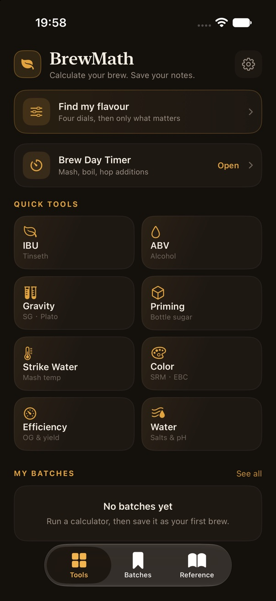
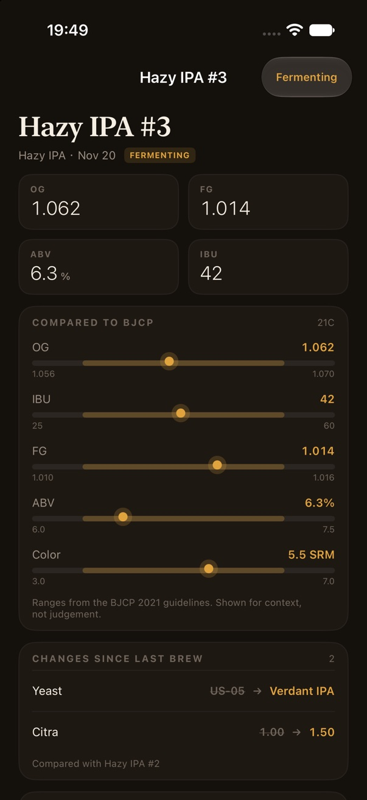
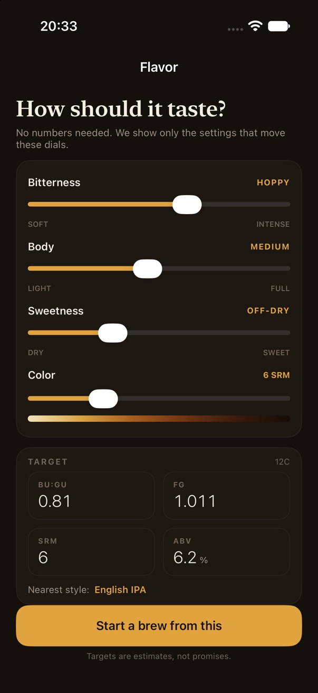
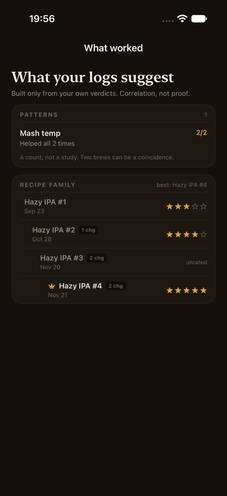
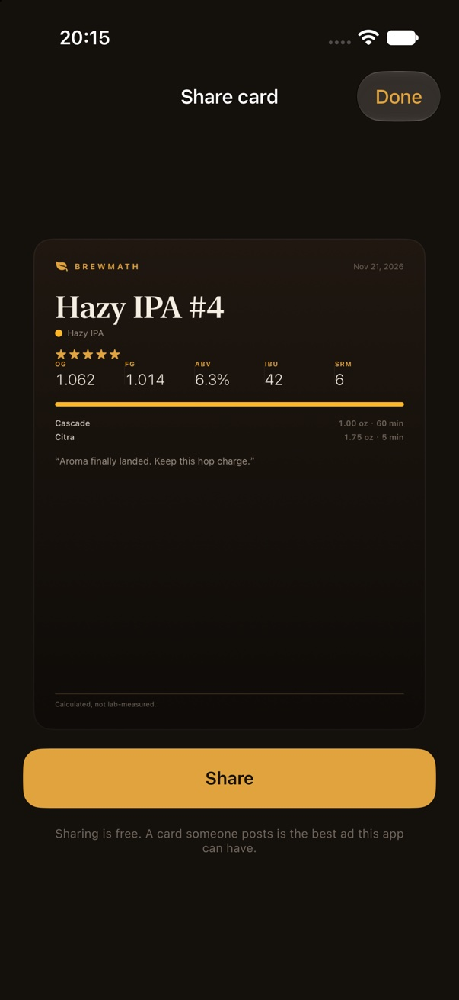

IBU calculator
Compare Tinseth and Rager, with hop form, timing and whirlpool handling.
iPhone and iPad · Brewing calculator + notebook
BrewMath combines the calculators you need on brew day with a recipe history that remembers what changed, what you tasted and what is worth brewing again.
Available now on the App Store for iPhone and iPad.

Brew-day essentials
Large numbers, a keypad built for wet hands and results you can read from across the kettle. Every calculator remains available without a purchase.
Compare Tinseth and Rager, with hop form, timing and whirlpool handling.
Standard and Hall estimates, apparent attenuation and final gravity context.
Switch between specific gravity, °Plato and Brix without re-entering the number.
Dose against the volume you actually packaged, not the batch size you planned.
Calculate strike temperature, water volume, grain absorption and sparge volume.
Morey colour with SRM/EBC, plus reverse-engineered brewhouse efficiency.
See ion contributions and sulfate-to-chloride balance before you treat the water.
Mash, boil and hop additions stay useful when the phone is locked or the app is closed.
More than a calculator
A recipe is more useful when it remembers the process behind it. BrewMath stores each batch as a frozen snapshot, then makes the next decision easier.
Compare a batch with the version it came from: grain, hops, yeast, water, temperature, packaging and more.

Choose bitterness, body, sweetness and colour. BrewMath turns the direction into concrete targets and a plausible style.

Tasting verdicts become a clear count of which changes helped, hurt or did nothing across your own batches.


A repeatable experiment loop
BrewMath does not pretend a few batches are a scientific study. It gives your own tasting decisions a memory, so every iteration starts from evidence rather than recollection.
The batch keeps its own recipe snapshot, even if the calculator inputs change later.
Single-variable mode helps keep the next experiment attributable.
Mark whether each change helped, hurt, did nothing or remains uncertain.
Turn a proven batch into v1, v2 and onward, then branch the next experiment from the current house version.
Transparent by design
BrewMath names the published model used for each calculation and highlights where models disagree.
No BrewMath account, developer server, analytics SDK or advertising network.
Built for the brew day
The interface is designed to stay readable beside a boiling kettle and comfortable on both iPhone and iPad.
One optional upgrade
Every calculator, unlimited batches, change tracking and tasting notes stay free. BrewMath Pro adds the tools that turn the history into a repeatable process.
No recurring billing. Purchase and restore are handled by Apple. App Store pricing may vary by region.
Common questions
Yes. It includes Tinseth and Rager IBU models, hop-form corrections, whirlpool handling and a brew-day timer. ABV, gravity, priming sugar, strike water, colour, efficiency and water salts are included as well.
No. There is no BrewMath account and no subscription. All calculators and unlimited batches are free. One optional one-time Pro purchase unlocks insights, recipe history and export tools.
Yes. Every batch owns a frozen recipe snapshot. BrewMath compares it with the batch it came from, records tasting verdicts and can promote a repeatable version into a numbered house recipe.
Yes. Calculations, batch notes, recipes and reference tables work without a network connection. iCloud Drive backup is optional and uses your own Apple account.
No brewing calculator can replace a laboratory measurement. BrewMath uses established public models and labels estimates honestly. Results can differ with ingredients, process and measurement technique.
BrewMath for iPhone and iPad
Brew-day calculators, a complete recipe snapshot and a tasting history that helps your own process improve.